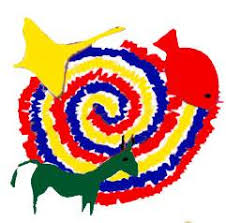

« Back
Experience:
Summer Camp Volunteer
Edmund Rice Summer Camps
I volunteered for this camp during summer. This camp provides a fun and friendly atmosphere for kids who come from rough backgrounds. Whether their family is going through a rough patch, whether they're poor or even if they are having an extremely rough time in school, they are more than welcome to come to this free Summer Camp. I was assigned a kid each day and had to make sure his/her needs were met throughout the day and that he/she was having a good time. Here is link for more information
July 2018

IT Department Assistant
Hovione
I assisted the IT Department at Hovione. I learned how to set up a computer and how to help clients with IT questions. I learned about networks and how important security is in a big factory like Hovione. I also learned how quickly hackers can get into the system if information is not properly protected. Here is link for more information
February 2018
Radiologist Assistant
Radiology Department
I was studying Physics in secondary school and thought it would be very interesting to work in the radiology department. I learned how the machines work and how important molecules and physics is to make the machines work and get the perfect x-ray. I assisted patients and made sure they were in the correct position in order for the photo to be taken. I learned about brain tumors and how they appear in a CT Scan.